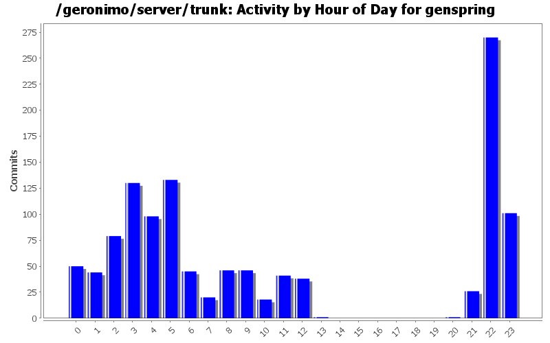
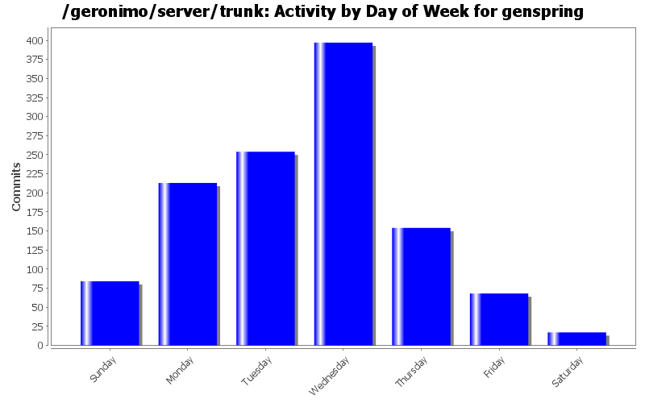
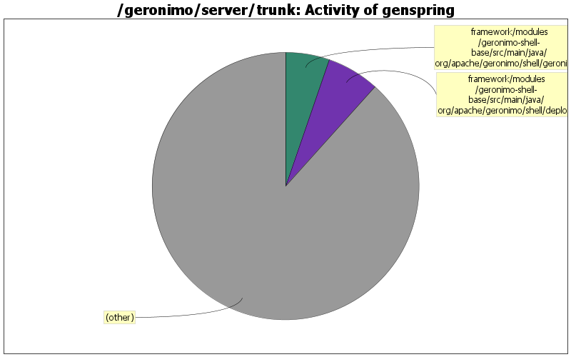

GERONIMO-6264 Can't access geronimo Java:com jndi tree from javax.servlet.ServletRequestListener.requestInitialized(ServletRequestEvent) - a workaround
80 lines of code changed in 2 files:
GERONIMO-5705 Track: Encryption logic for connectionPassword attribute in ldap realm, patch from Yi Xiao.
35 lines of code changed in 1 file:
use "if (name.startsWith(basePath)&& name.endsWith(FILE_PUBLISHER))" to check the entry in bundle to determine if it's valid publishers.
676 lines of code changed in 1 file:
org.apache.openejb.util.TransactionUtils was removed from openejb 4.0.
0 lines of code changed in 2 files:
GERONIMO-5708 Track: Unlock keystore command line utility does not work with Configured Encryption. Patch from Yi Xiao
56 lines of code changed in 1 file:
GERONIMO-5744 setting org.apache.geronimo.equinox.useURLClassLoader=false by default becuase setting to true will bring some TCK failures in jaxr/jaxws buckets.
2 lines of code changed in 1 file:
GERONIMO-6139, java 7 can't recogonize the relative temp dir somehow. Use full path instead in scripts.
2 lines of code changed in 2 files:
GERONIMO-6139 Support Java 1.7 Runtime, use Ivan's proposal to add a profile for jre 1.7.
173 lines of code changed in 1 file:
GERONIMO-5744 bundle urls and 3rd party libraries, setting org.apache.geronimo.equinox.useURLClassLoader=true by default to run tck.
6 lines of code changed in 1 file:
XBEAN-183/GERONIMO-6132 Disable wired bundles search by default.
Setting this in geronimo script only to avoid appclient issue for now. The user can still use GERONIMO_OPTS to set it back to true when needed.
4 lines of code changed in 2 files:
pick up the latest geronimo BV bundle.
9 lines of code changed in 4 files:
Make aries.util.version in jar file consistent with version in path.
1 lines of code changed in 1 file:
Don't init RegistryServlet and NotifyServlet on startup to speed up the startup.
65 lines of code changed in 1 file:
GEROGRONIMO-6016 Geronimo can't handle well when modules in ear has the same name.
Only rename the module when there are more than 2 modules in ear.
1 lines of code changed in 1 file:
the openejb side JndiConsumer api changed again.
0 lines of code changed in 2 files:
Use yoko 1.3-SNAPSHOT
1 lines of code changed in 1 file:
comment this for now because it blocks server from starting.
1 lines of code changed in 1 file:
Openejb added a method for interface JndiConsumer.
11 lines of code changed in 1 file:
commons-lang was upgraded to 2.6
1 lines of code changed in 1 file:
Openejb added a method for interface JndiConsumer.
11 lines of code changed in 1 file:
(318 more)